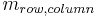

BigStitcher ReorientSample
In addition to the manual view alignment functionality in Stitching mode (see here for details), which focuses on the translational alignment of tiled images, we offer offer complementary functions for manually transforming images and managing transformations in MultiView mode.
These functions can be found under Calibration/Transformations in the main menu of the MultiView mode.

Contents
Registration Explorer
Clicking Registration Explorer (on/off) will open up a new window listing all transformations that are currently applied to the selected view (groups).
Each Transformation consists of a 3x4 matrix (3D affine transformation + translation), of which all entries  are listed in this window.
Note that the final transformation of a view is determined by applying the individual transformations last-to-first.

You have a few options of modifying the transformations here:
- double-clicking on an entry allows you to change that entry by hand
- right-clicking on a transformation allows you to:
- Delete it
- Copy it
- Paste a previously copied transformation (either before or after the selected transformation or overwriting the currently selected transformation)
If the BigDataViewer is open, you can immediately see the effects of your changes.
Specify Calibration
Using Specify Calibration, you can change the voxel distance and length unit for the selected views.

Apply Transformation(s)
The Apply Transformation(s) option gives you a variety of possibilities of adding new transformations for the selected images.
In the first dialog, you have to specify the Transformation Model, which can be:
- Identity (no transfromation): useful, if you have changed the calibration (see above) and just want to re-calculate the isotropic scaling.
- Translation
- Rigid: translation and rotation
- Affine: full flexibiity
Also, you have to select what to Append the new transformation on top of:
- Identity: removes all existing transformations and keeps just the new one
- Calibration: removes all existing calibrations, re-calculates isotropic scaling and the adds the new transformation
- Current view transformations: keep all existing transformations and add the new one
Furthermore, you can select Same transformation for all angles to generate one transformation for all views. Otherwise, you will be asked to specify a separate transformation for all angles of the selected views.

For Translation or Affine Models, you will be asked for the shift vector or the transformation matrix in the next dialog (if you chose NOT to use the same transformation for all angles, you will be asked for multiple vectors/matrices). Please provide them as comma-separated numbers (for matrices: row-by-row).


For Rigid models, you can specify how to define the transformation(s):

- Matrix: same as for Affine (see above)
- Interactively using the BigDataViewer: same as Interactively Reorient Sample (see below)
- Rotation around axis: allows you to specify an axis around which to to rotate and by how many degrees

Bake BDV manual transform
The BigDataViewer offers its own functionality for transforming views or view groups. Clicking t in the BigDataViewer window will start the transformation. Now, you can transform the views via clicking and dragging the mouse. Click t again to apply the transformation or ⎋ Esc to cancel the transformation.
The transformation will affect the current view (group). Views or groups can be selected in the visibility and grouping window (press F6 in BigDataViewer or open it via the menu). For details on view transformation in BigDataViewer, please refer to the corresponding documentation.
Normally, the manual transformations from BDV are not propagated to BigStitcher/Multiview Reconstruction and thus will be lost once you close the BigDataViewer.
The Bake BDV manual transform will take the manual transformations for the selected views from BigDataViewer and append them to the dataset's registrations.
Remove Transformation
Under this menu item, you have the option to remove Latest/Newest Transformation or the First/Oldest Transformation (typically the calibration) for all selected views.
As every registration step adds a new transformation, you can use Remove Latest/Newest Transformation to un-do a bad registration (note that there is no re-do, it will be gone forever, unless you saved before).
Interactively Reorient Sample
Clicking this will open up a new window that listens for the global transformation of the BigDataViewer. You can then Apply the Transformation from BDV to all selected views. This is a convenient way of interactively re-orienting the sample, e.g. to be aligned to the coordinate system axes, by simply rotating it in the BigDataViewer.
You can choose to Ignore scaling factor from BigDataViewer - this way, we will extract the sample rotation, but not any effects of zooming. Note that the scaling depends on the BDV window size, among other things, and you can achieve a zoom-out when fusing by using downsampling - we suggest to ignore the scaling unless you know what you are doing.

Note that the identity transformation corresponds to an xy-View of the data in BDV. To avoid confusion, we advise to reset the view (by clicking ⇧ Shift+Z in the BDV window) before you start the interactive reorientation.
Go back to the main page